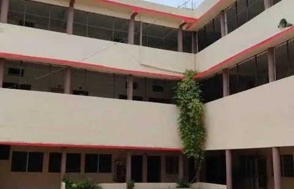

I’m Yogeshwaran Govindhan — a pre final-year Biomedical Engineering student with a deep passion for blending technology and medicine to create real-world impact.
My goal is to innovate in the healthcare space, especially through non-invasive, patient-friendly solutions. I’ve worked on a wireless incubator monitoring system and trained in advanced diagnostic and critical care equipment. These hands-on experiences have helped me grow both technically and creatively.
Outside the lab, I take pride in being an active student leader. I’ve served as a student ambassador, coordinated PCB design workshops, and helped organize major cultural events like ‘IYARKAI’2K23. Whether it’s on stage or behind the scenes, I love collaborating with people and turning ideas into action.
I’m always eager to learn, experiment, and take on new challenges—especially in areas like medical equipment innovation, embedded tech, and healthcare IoT. If you're into engineering, creativity, and purpose-driven projects, we're probably on the same page.
Education
Bachelor of Engineering in Biomedical Engineering
Sri Shanmugha College of Engineering and Technology, Sankari, Salem
2022 – 2026 | Current CGPA: 8.01
Specialized in medical equipment, human anatomy, embedded systems, and PCB design
Gained hands-on experience in diagnostics, critical care equipment, and biomedical project development
Higher Secondary Education (HSC):
Saraswathi Knowledge Yuvakendra Matric Hr. Sec. School, Meyyur, Tiruvannamalai
2019 – 2021 | Score: 84.67%
Built a strong foundation in core science subjects, leading to an interest in biomedical applications
Secondary School Leaving Certificate (SSLC):
Saraswathi Knowledge Yuvakendra Matric Hr. Sec. School, Meyyur, Tiruvannamalai
2017 – 2019 | Score: 77.6%
Skills
I have a strong technical foundation in biomedical engineering, with hands-on skills in medical device handling, PCB designing, circuit interfacing, and embedded systems. My background in human anatomy and physiology helps me understand the clinical applications of engineering solutions. I'm also skilled in diagnostics, troubleshooting, and designing circuits tailored for healthcare needs. Alongside technical expertise, I bring valuable soft skills like analytical thinking, effective communication, and event organization—enabling me to collaborate well in teams and manage projects with precision.
- PCB Design
- calibration and trobleshooting
- Anatomy and Human physiology
- Python,SQL,Pwer BI,Excel
- Circuit Interfacing
- Event Organization
Projects
Wireless Incubator Monitor
The Wireless Incubator Monitoring System is a biomedical project designed to ensure the safety of newborns by continuously monitoring critical incubator conditions such as temperature, humidity, and oxygen levels. Using sensors connected to a microcontroller (like Arduino or ESP32), the system collects real-time data and transmits it wirelessly via Wi-Fi or Bluetooth to a mobile app or monitoring device. An alert system is integrated to notify caregivers if any parameter deviates from the safe range, helping prevent health risks. This low-cost, efficient solution reduces the need for manual checks and supports remote monitoring, making it ideal for NICUs and home-based infant care.
App for blood donors
The project “A Mobile Application for Real-Time Matching of Blood Donors and Recipients” aims to create a user-friendly platform that connects individuals in urgent need of blood with available donors nearby. The app allows users to register as donors or recipients, automatically matches compatible blood types using location-based services, and sends instant notifications to potential donors. It also includes features like blood bank listings, donor history tracking, and emergency alerts, helping to reduce response time and save lives through quick and efficient communication.
Assignments

Coding For Innovators
As part of my exploration into creative coding and app development, I worked on small projects using Scratch and MIT App Inventor. In Scratch, I created an interactive animation where users could click on characters to trigger animations and sounds, helping me understand event-driven programming and animation sequencing. For my MIT App Inventor project, I designed a simple To-Do List app where users could add, edit, and delete tasks, which allowed me to explore mobile app development, UI/UX design, and data storage. These projects were valuable in strengthening my problem-solving skills and deepening my understanding of both programming logic and user interface design. I look forward to expanding these skills with more complex projects in the future.

Laser Cad
As part of my exploration into design and manufacturing processes, I worked with a Laser CAD machine to create a 3D model and convert it into a 2D design for laser cutting. Using Fusion 360, I designed a 3D spherical model, which was then converted into a 2D vector format suitable for the laser cutting process. The laser cutter precisely cut the design from material based on the 2D file, allowing me to bring the digital model to life as a physical object. This project helped me understand the integration between 3D modeling, CAD software, and CNC (Computer Numerical Control) machinery, while also gaining hands-on experience with the laser cutting process for hardware fabrication.

Design Thinking
In this assignment, I explored various Design Thinking principles, focusing on empathy, ideation, and prototyping to create a functional and aesthetically pleasing design. The process began with identifying user needs and defining the problem, followed by brainstorming and sketching potential solutions. Through iterative prototyping, I developed a 3D design of a table, incorporating user feedback and refining the concept. The final design is not only innovative but also practical, leading us to move forward with the process of patent application to protect the design. This project allowed me to apply design thinking in real-world product development while also learning about the intellectual property process.